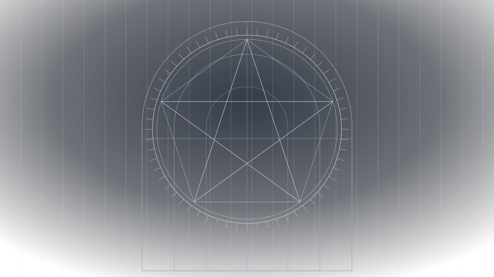
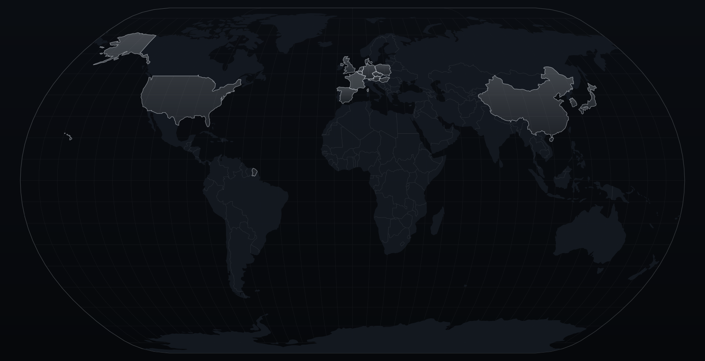
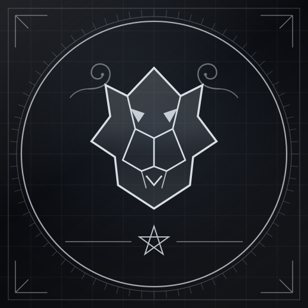

01 — Narrative
The Story in Ten Chapters
Ten eras, from the backgrounds of five musicians who had never played together to a band headlining Japan's most storied arena. Jump to any chapter, or read straight through.

Tokyo · Heavy Metal · 2016 → present
A complete, sourced history — from the ashes of Destrose to a sold-out Nippon Budokan.
00 — Orientation
01 — Narrative
Ten eras, from the backgrounds of five musicians who had never played together to a band headlining Japan's most storied arena. Jump to any chapter, or read straight through.
02 — The centrepiece
Every documented milestone, in order. Filter by category, jump by year, and open any linked release for the full detail.
No events match these filters.
03 — Personnel
One founding bassist left; one hiatus split the band's life in two. The chart below maps every tenure against the calendar — hover or tap a bar for detail.
04 — Recorded output
Studio albums, EPs, singles, live records and compilations. Select any release for tracklist, lineup, context and sources.
05 — Reach
Every country and date documented on this page, plotted. A Japanese band that got to London inside a year of its first gig, and has since played four continents.

06 — Standing

07 — Receipts
Everything on this page is drawn from the references below. Where sources conflict or a detail could not be corroborated, the page says so inline.